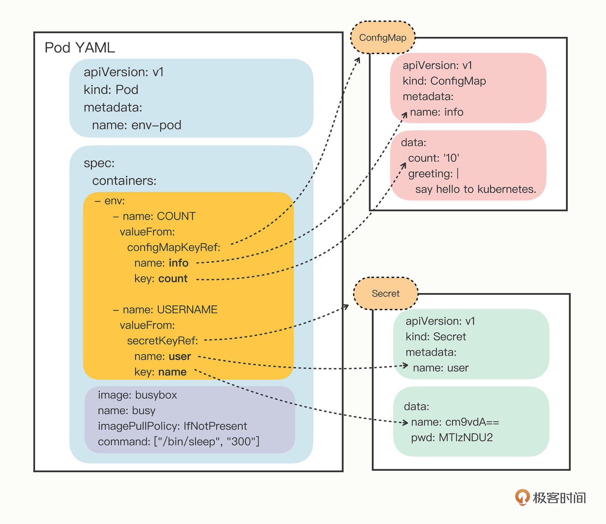
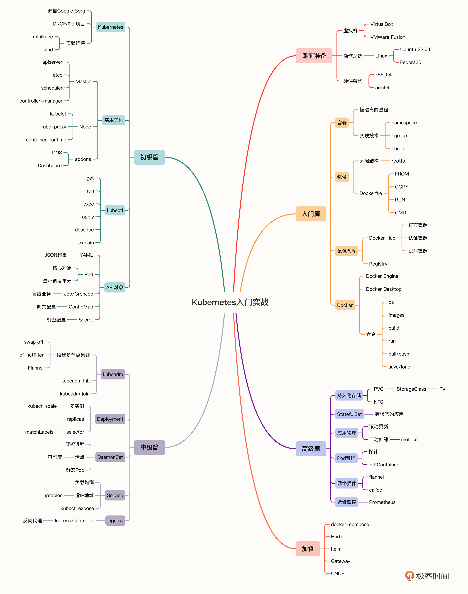

- 00 开篇词 迎难而上，做云原生时代的弄潮儿.md
- 00 课前准备 动手实践才是最好的学习方式.md
- 01 初识容器：万事开头难.md
- 02 被隔离的进程：一起来看看容器的本质.md
- 03 容器化的应用：会了这些你就是Docker高手.md
- 04 创建容器镜像：如何编写正确、高效的Dockerfile.md
- 05 镜像仓库：该怎样用好Docker Hub这个宝藏.md
- 06 打破次元壁：容器该如何与外界互联互通.md
- 07 实战演练：玩转Docker.md
- 08 视频：入门篇实操总结.md
- 09 走近云原生：如何在本机搭建小巧完备的Kubernetes环境.md
- 10 自动化的运维管理：探究Kubernetes工作机制的奥秘.md
- 11 YAML：Kubernetes世界里的通用语.md
- 12 Pod：如何理解这个Kubernetes里最核心的概念？.md
- 13 Job_CronJob：为什么不直接用Pod来处理业务？.md
- 14 ConfigMap_Secret：怎样配置、定制我的应用.md
- 15 实战演练：玩转Kubernetes（1）.md
- 16 视频：初级篇实操总结.md
- 17 更真实的云原生：实际搭建多节点的Kubernetes集群.md
- 18 Deployment：让应用永不宕机.md
- 19 Daemonset：忠实可靠的看门狗.md
- 20 Service：微服务架构的应对之道.md
- 21 Ingress：集群进出流量的总管.md
- 22 实战演练：玩转Kubernetes（2）.md
- 23 视频：中级篇实操总结.md
- 24 PersistentVolume：怎么解决数据持久化的难题？.md
- 25 PersistentVolume + NFS：怎么使用网络共享存储？.md
- 26 StatefulSet：怎么管理有状态的应用？.md
- 27 滚动更新：如何做到平滑的应用升级降级？.md
- 28 应用保障：如何让Pod运行得更健康？.md
- 29 集群管理：如何用名字空间分隔系统资源？.md
- 30 系统监控：如何使用Metrics Server和Prometheus？.md
- 31 网络通信：CNI是怎么回事？又是怎么工作的？.md
- 32 实战演练：玩转Kubernetes（3）.md
- 33 视频：高级篇实操总结.md
- 加餐 docker-compose：单机环境下的容器编排工具.md
- 加餐 谈谈Kong Ingress Controller.md
- 结束语 是终点，更是起点.md
00 开篇词 迎难而上，做云原生时代的弄潮儿
你好，我是罗剑锋，不过更愿意你称呼我“Chrono”。
先来简单介绍一下我自己吧。作为一个有着近二十年工作经验的“技术老兵”，我一直奋斗在开发第一线，从Windows到Linux、从硬件到软件，从单机到集群、云，开发了各种形式的应用，也经历了许多大小不一的公司，现在是在API管理和微服务平台公司Kong，基于Nginx/OpenResty研发Kong Gateway、Kong ingress Controller等产品。
其实我应该算是极客时间的老朋友了，在2019年开了《透视HTTP协议》的课程，在2020年开了《C++实战笔记》的课程，然后因为工作上的事情比较多，“消失”了近两年的时间。
不过这段日子里我倒没有“两耳不闻窗外事”，而是一直在关注业界的新技术新动向，所以今天，我再次回到了极客时间的这个大讲堂，想和你聊聊如今风头正劲的Kubernetes。
现在的Kubernetes
你一定听说过Kubernetes吧，也许更熟悉一点的，是许多人总挂在嘴边的缩写——“K8s”。
自从2013年Docker诞生以来，容器一跃成为了IT界最热门的话题。而Kubernetes则趁着容器的“东风”，借助Google和CNCF的强力“背书”，击败了Docker Swarm和Apache Mesos，成为了“容器编排”领域的王者至尊。
换一个更通俗易懂的说法，那就是：现在Kubernetes已经没有了实际意义上的竞争对手，它的地位就如同Linux一样，成为了事实上的云原生操作系统，是构建现代应用的基石。
毕竟，现代应用是什么？是微服务，是服务网格，这些统统要围绕着容器来开发、部署和运行，而使用容器就必然要用到容器编排技术，在现在只有唯一的选项，那就是Kubernetes。
不管你是研发、测试、还是运维，不管你是前台、后台、还是中台，不管你用的是C++、Java还是Python，不管你是搞数据库、区块链、还是人工智能，不管你是从事网站、电商、还是音视频，在这个“云原生”时代，Kubernetes都是一个绕不过去的产品，是我们工作中迟早要面对的“坎儿”。
你也许会有疑惑：我现在的工作和“云”毫不沾边，而且Kubernetes都“火”了这么久，现在才开始学，会不会有点晚了？值不值呢？
这里我就要引用一句老话了：“艺多不压身”，还有另一句：“机遇总是偏爱有准备的人”。
“云原生”已经是现在IT界的普遍共识，是未来的大势所趋。也许这个“浪潮”暂时还没有打到你这里来，但一旦它真正来临，只有你提前做好了知识储备，才能够迎难而进，站上浪头成为“弄潮儿”，否则就可能会被“拍在沙滩上”。
我和你说一下我自己的亲身经历吧。
早在Docker和Kubernetes发布之初，我就对它们有过关注。不过因为我的主要工作语言是C/C++，而Docker和Kubernetes用的都是Go，当时Go的性能还比较差（比如垃圾回收机制导致的著名Stop the World），所以我只是简单了解了，没有去特别研究。
过了几年，一个偶然的机会，我们要在客户的环境里部署自研应用，但依赖库差异太大，很难搞定。这个时候我又想起了Docker，经过一个多星期的折腾，艰难地啃下了一大堆资料之后，总算是把系统正常上线了。
虽然任务完成了，但也让我意识到自己从前对Docker的轻视是非常错误的，于是就痛下决心，开始从头、系统地学习整理容器知识，之后也就很自然地搭上了Kubernetes这条“大船”。
再后来，我想换新工作，面试的时候Boss出了道“偏门”题，讲Kubernetes的容器和环境安全。虽然我不熟悉这个方向，但凭借着之前的积累，只用了一个晚上就赶出了20多页的PPT，第二天面对几位评委侃侃而谈，最终顺利拿下了Offer。
你看，如果我当时一味固执己见，只呆在自己的“舒适区”里，不主动去学习容器技术和Kubernetes，当机遇不期而至的时候，很可能就会因为手足无措而错失了升职加薪的良机。
所以也希望你不要犯我当初的错误，我们应当看清楚时代的走向，尽可能超前于时代，越早掌握Kubernetes，将来自己成功的几率就越大。
学习Kubernetes有哪些难点
那么，我们应该怎么来学习Kubernetes呢？
其实今天学习Kubernetes的难度，比起前几年来说，已经是极大地下降了，网上资料非常多，有博客、专题、视频等各种形式，而且Kubernetes为了推广自身，在官网上还放出了非常详细的教程和参考手册，只要你肯花时间，完全可以“自学成才”。
不过，“理想很丰满，现实很骨感”。理论上讲，学习Kubernetes只要看资料就足够了，但实际情况却是学习起来仍然困难重重，我们会遇到很多意想不到的问题。
这是因为Kubernetes是一个分布式、集群化、云时代的系统，有许多新概念和新思维方式，和我们以往经验、认知的差异很大。
我觉得，Kubernetes技术栈的特点可以用四个字来概括，那就是“新、广、杂、深”。
- “新”是指Kubernetes用到的基本上都是比较前沿、陌生的技术，而且版本升级很快，经常变来变去。
- “广”是指Kubernetes涉及的应用领域很多、覆盖面非常广，不太好找到合适的切入点或者突破口。
- “杂”是指Kubernetes的各种实现比较杂乱，谁都可以上来“掺和”一下，让人看的眼晕。
- “深”是指Kubernetes面对的每个具体问题和方向，都需要有很深的技术背景和底蕴，想要吃透很不容易。
这四个特点就导致Kubernetes的“门槛”相当高，学习曲线非常陡峭，学习成本非常昂贵，有可能花费了大量的时间和精力却南辕北辙、收效甚微，这点我确实是深有体会。
比如在初学的过程中我就遇到过这些疑问，不知道你有没有同感：
- Docker、Containerd、K8s、K3s、MicroK8s、Minikube……这么多项目，该如何选择？
- 容器的概念太抽象了，怎么才能够快速准确地理解？
- 镜像的命名稀奇古怪，里面的“bionic”“buster”等都是什么意思？
- 不知道怎么搭建出Kubernetes环境，空有理论知识，无法联系实际。
- YAML文件又长又乱，到哪里能找到说明，能否遵循什么简单规律写出来？
- Pod、Deployment、StatefulSet……这么多的对象，有没有什么内在的脉络和联系？
遗憾的是，这些问题很难在现有的Kubernetes资料里找到答案。
我个人感觉，它们往往“站得太高”，没有为“零基础”的初学者考虑，总会预设一些前提，比如熟悉Linux系统、知道编程语言、了解网络技术等等，有时候还会因为版本过时而失效，或者是忽略一些关键的细节。
这就让我们初学者经常“卡”在一些看似无关紧要却又非常现实的难点上，这样的点越积越多，最后就让人逐渐丧失了学习Kubernetes的信心和勇气。
所以，我就想以自己的学习经历为基础，融合个人感悟、经验教训和心得技巧，整理出一个初学者面对Kubernetes这门新技术的入门路线和系统思路，让你在学习时有捷径可走，不再有迷茫和困惑，能快速高效地迈入Kubernetes的宏伟殿堂。
在这个专栏里你会怎么学习Kubernetes
讲到这里，你一定很想知道，这个专栏有什么特点，和别的课程有哪些不一样，结合刚才讲的Kubernetes技术栈四个特点“技术新、领域广、实现杂、方向深”，我来仔细说一说我的想法和考量。
- 第一，没有太多前提，不会Go你也可以学。
在这门课里，我不会要求你学习Go语言，也不会去讲Kubernetes的源码。
虽然是研发出身，但我并没有特别深入地了解Go语言，但是，我认为这反而是一个优势。因为面对Kubernetes的时候我和你是“平等”的，不会“下意识”地去从源码层次来讲解它的运行原理，更能够设身处地为你着想。
讲源码虽然会很透彻，但它的前置条件实在是太高了，不是所有的人都具备这个基础的。为了学习Kubernetes要先了解Go语言，有点“本末倒置”，如同钱钟书老先生所说：“如果你吃了个鸡蛋，觉得味道不错，何必去认识那个下蛋的母鸡呢?”（我觉得这方面也可以对比一下Linux操作系统，它是用C语言写的，但几乎没有人要求我们在学习Linux之前需要事先掌握C语言。）
不过如果你真想做Kubernetes开发，等学会了Kubernetes的基本概念和用法，再回头去学Go语言也完全来得及。
- 第二，这个专栏我会定位在“入门”，也就是说，不会去讲那些高深的大道理和复杂的工作流程，语言也尽量朴素平实，少用专业术语和缩略词。
毕竟Kubernetes系统涉及的领域太过庞大，对于初次接触的人来说直接“抠”内部细节不太合适，那样很容易会“跑偏”“钻牛角尖”。
我觉得学习Kubernetes最好的方式是尽快建立一个全局观和大局观，等到你对这个陌生领域的全貌有了粗略但完整的认识之后，再挑选一个自己感兴趣的方向去研究，才是性价比最高的做法。
而且前面也说过，Kubernetes版本更新很快，有的功能点或许一段时间之后就成了废弃的特性（比如ComponentStatus在1.19被废弃、PodSecurityPolicy在1.21被废弃），如果讲得太细，万一今后它过时无用，就实在是太尴尬了。
- 第三，课程会以实战为导向，强调眼手脑结合，鼓励你多动手、多实际操作，我认为这是这个课程最大的特点。
Kubernetes一般每年都会发布一个大版本，大版本又会有很多的小版本，每个版本都会持续改进功能特性，但一味求新，不符合当前的实际情况，毕竟生产环境里稳定是最重要的。
所以，我就选择了今年（2022年）初发布的Kubernetes 1.23.3，它是最后一个支持Docker的大版本，承上启下，具有很多的新特性，同时也保留了足够的历史兼容性，非常适合用来学习Kubernetes。
在课程里，我会先从Docker开始，陆续用minikube、kubeadm搭建单机和多机的Kubernetes集群环境，在讲解概念的同时，还会给出大量的docker、kubectl操作命令，让你能够看完课程后立即上手演练，用实际操作来强化学习效果。
- 第四，具体到每一节课上，我不会“贪大求全”，而是会“短小精悍”，做减法而不是加法，力争每节课只聚焦在一个知识点。
这是因为Kubernetes涉及的领域太广了，它的知识结构是网状的，之间的联系很密切，在学习时稍不注意就会跳跃到其他的地方，很容易“发散”“跑题”，导致思维不集中。
所以我在讲解的时候会尽量克制，把每节课收束在一个相对独立的范围之内，不会有太多的外延话题，也不会机械地罗列API、命令参数、属性字段（这些你都可以查阅Kubernetes文档），在讲解复杂的知识点时还会配上图片，让你能够精准地理解吸收知识。
比如Pod等众多API对象之间的关系一直是学习Kubernetes的难点，单用文字很难解释清楚，所以我画了很多图，帮助你形象地理解它们的联系。就像这张：

因为每一讲都聚焦在一个知识点上，专栏的整个结构，我也梳理出了一条独特路线：把Kubernetes的知识点由网状结构简化成了线性结构，你可以在这条路线上循序渐进，由浅入深、由易到难地学习完整的Kubernetes知识体系。
专栏的线性结构是什么样的
从这些设想出发，我把专栏主要划分成了五个模块。
- 课前准备
在正式学习前首先有一节课前准备，这也是我写专栏的惯例了，会跟你说一下我们学习的实验环境，用虚拟机软件搭建出一个Linux系统，为零基础的同学扫除一些非常简单但是其他地方可能没有讲到的后顾之忧。
- 入门篇
我会用最流行的Docker来讲解Kubernetes的基础技术：容器，让你了解它的基本原理，熟悉常用的Docker命令，能够轻松地拉取、构建镜像，运行容器，能够使用容器在本机搭建开发测试环境。
- 初级篇
在具备了容器的知识之后，我们就可以来学习Kubernetes了，用的是单机环境minikube。你会了解为什么容器会发展到容器编排，Kubernetes解决了什么问题，它的基本架构是什么样子的，再学习YAML语言、核心对象Pod，还有离线业务对象Job/CronJob、配置信息对象ConfigMap/Secret。
- 中级篇
我们会在“初级篇”的基础上更进一步，使用kubeadm搭建出一个多节点的集群，模拟真实的生产环境，并介绍Kubernetes里的4个重要概念：Deployment、DaemonSet、Service、Ingress。学习了这些对象，你就能够明白Kubernetes的优点、特点是什么，知道为什么它能够一统天下，成为云原生时代的操作系统。
- 高级篇
经过前面几个模块的学习，你就已经对Kubernetes有了比较全面的认识了，所以我会再讲解一些深层次知识点和高级应用技巧，包括持久化存储、有状态的对象、应用的滚动更新和自动伸缩、容器和节点的管理等等。
当然，这种纯线性学习也难免会有缺点，我也会用其他的形式来补充完善，让你的学习过程更丰富多样，比如每一讲后面的知识小贴士、互动答疑。
在专栏的中后期，我还会为你准备一些“加餐”，讲讲Kubernetes相关的一些“花边逸闻”，比如docker-compose、CNCF、API Gateway等等，扩展一些虽然是外围但也很有实际意义的知识。
前面说过要多动手实践，为了强化实战效果，每个模块的知识点学完后，我都会安排一节实战演练课和一节视频课：
- 实战课，我们会应用模块中学习的知识，来实战搭建WordPress网站，你可以跟着课程一路走下来，看着它如何从单机应用演变到集群里的高可用系统的。
- 视频课，我会把这个模块里大部分重要的知识点都实机操作演示给你看，相信通过“文字+图片+音频+视频”的多种形式，你的学习一定会非常充实而满足。
你的Kubernetes之旅马上就要开始了，我再送你一张课程的知识地图，希望你能够在今后的三个月里以它为伴，用努力与坚持去浇灌学习之花，收获丰硕的知识和喜悦之果！-

戳这里 👉学习交流群，进群和罗老师、技术大牛们一起快速成长
专栏的画图工具说明：知识讲解类keynote，思维导图类Xmind。
© 2019 - 2023 Liangliang Lee. Powered by gin and hexo-theme-book.